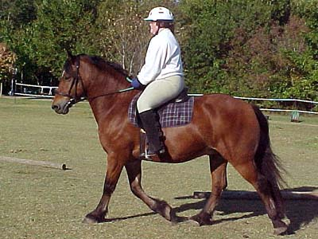
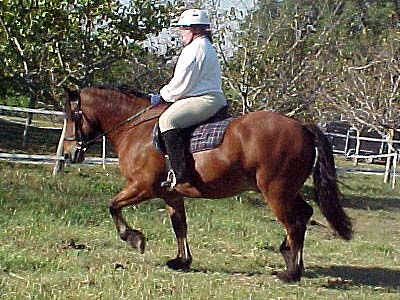
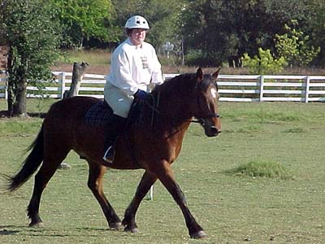
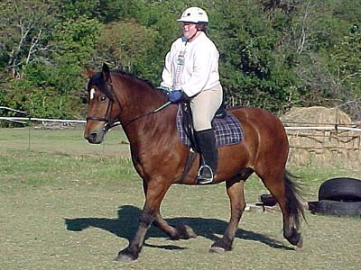
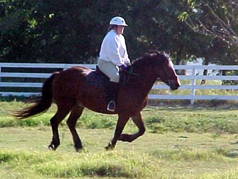

09/29/01
Sally and Thuy

Thuy knows how to soften, but he and Sally are just learning to communicate.

This is more like it, but he can also be lazy and forget about impulsion.

He can stride out, but I'm sure he'd rather not...

They're supposed to enter an intro test in a few weeks. I'd be pleased if his trot looked like this.

He's so fun to canter around the pasture, because his stride is so short and upright that he feels like a rocking horse.
(back to home page)